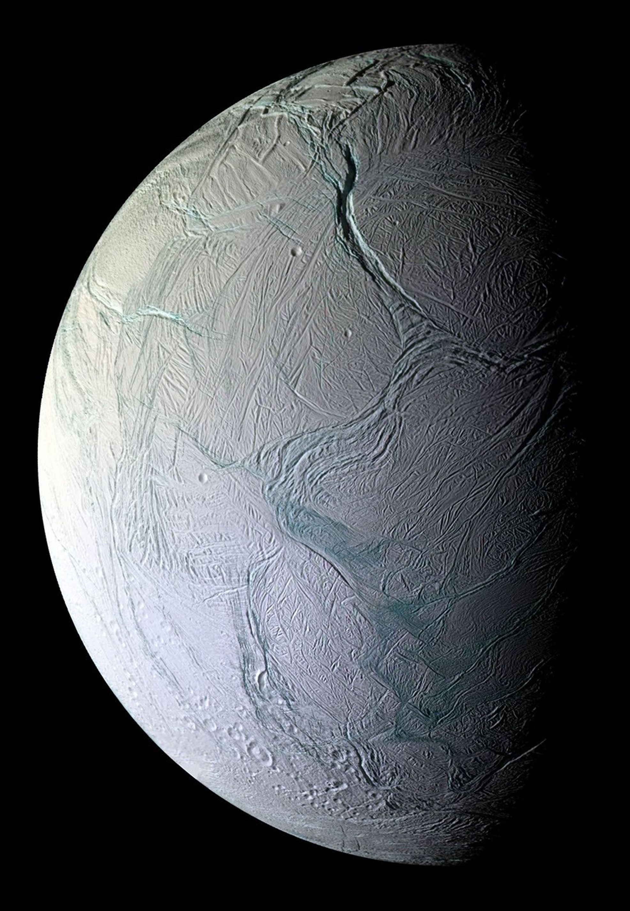

Research that connects planets, instruments, and physical environments.
My research background spans planetary habitability, climate modeling, detector testing, spectroscopy, instrumentation, and student-led experimental work. I am interested in research that connects physical systems across scales, from the internal and atmospheric evolution of planetary bodies to the instruments used to observe, test, and measure them.
As I begin graduate study in Earth Sciences with a concentration in Geophysics at the University of Oregon, I am especially interested in using geophysical thinking to better understand planetary environments. My long-term interests include planetary interiors, icy worlds, surface processes, atmospheric evolution, and the physical limits of habitability.

Current & Previous Research
Exoplanet Habitability Evolution
At Florida Institute of Technology, I modeled the long-term habitability of icy satellite environments, focusing on how dramatic changes in stellar radiation during post-main-sequence stellar evolution could affect subsurface conditions. This work used the ExoPlaSim General Circulation Model to explore climate and atmospheric behavior under changing stellar conditions.
This project strengthened my interest in habitability as an evolving process rather than a fixed state. I am especially interested in how worlds can move into or out of habitable conditions due to changes in radiation, atmosphere, surface environment, and internal energy.
View Research PDFCERN CMS Upgrade & Testing
I contributed to work related to the Compact Muon Solenoid Inner Tracker upgrade for the High-Luminosity Large Hadron Collider. My role included testing and grading semiconductor chips to help ensure performance standards for high-energy particle detection.
I also worked on investigating anisotropic resistance in carbon fiber materials by helping build and use a testing apparatus to measure how conductivity varies along different axes. This work connected physics, materials testing, instrumentation, and experimental design.
View PresentationAstroTech at UC Berkeley
Through AstroTech at UC Berkeley, I gained hands-on experience building a complete spectrograph system. This included optical alignment, calibration, instrumentation setup, and spectroscopic measurements connected to atmospheric signatures.
This experience helped me better understand the relationship between scientific questions and the tools needed to answer them. It also deepened my interest in instrumentation, optics, and the physical process of turning light into usable scientific data.
Exoplanets, icy worlds, and habitability
My exoplanet habitability work focused on Enceladus as an icy satellite environment and explored how changing solar evolution could affect its potential habitability. Enceladus is especially interesting because icy worlds show that habitability does not have to be limited to Earth-like surfaces. Subsurface oceans, tidal heating, ice shells, and chemical energy sources can all shape whether an environment may support life.
I am drawn to research questions that treat habitability as dynamic. Rather than asking only whether a world is habitable today, I am interested in how habitability changes over time, what physical mechanisms can preserve it, and whether certain environments can temporarily gain or regain favorable conditions.
Research Themes
Planetary Habitability
I am interested in the physical conditions that allow planetary and icy satellite environments to become, remain, or return to being habitable. This includes atmospheres, radiation, surface conditions, internal energy, and climate feedbacks.
Geophysics
My graduate direction in geophysics connects naturally with planetary science. I am interested in how interiors, materials, surfaces, and dynamic physical processes shape both Earth and other planetary bodies.
Instrumentation
I value hands-on experimental and observational work, including spectroscopy, telescope operation, detector testing, optical alignment, and the technical systems that make scientific measurements possible.
Future Publications
This section will be updated with future publications, manuscripts, conference abstracts, posters, and research products. As I begin graduate school, I plan to use this page as a central place to document my academic work and share selected research materials.
Future entries may include work related to planetary habitability, icy worlds, geophysics, instrumentation, and Earth or planetary systems research.
- Peer-reviewed publications — forthcoming
- Conference abstracts — forthcoming
- Research posters — forthcoming
- Presentations and selected materials — forthcoming
Selected Materials
Exoplanet Research PDF
A selected research document related to my work on exoplanet habitability evolution and icy satellite environments.
Open PDFCERN Presentation
A presentation related to my work on CMS Inner Tracker testing, semiconductor chips, and anisotropic resistance in carbon fiber materials.
Open PresentationCV
My full CV includes education, research experience, leadership, technical skills, service, languages, and references.
Download CV